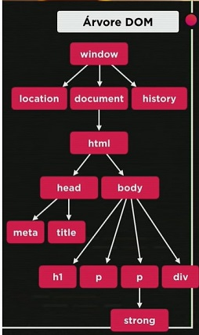

Home
Home
O DOM (Document Object Model) é a representação de dados dos objetos que compõem a estrutura e o conteúdo de um documento na Web. Ele é utilizado pelo navegador Web para representar a sua página Web, uma interface que representa como os documentos HTML e XML são lidos pelo seu browser e permite o tratamento de componentes visuais.
Abaixo temos a resentação da árvore DOM do Exercício acima:

Onde:
Como foram exibidas as informações apresentadas no - EXEMPLOS DE MANIPULAÇÃO DOM:
<script>
window.document.write('- EXEMPLOS DE MANIPULAÇÃO DOM <br>')
window.document.write('O Charset do documento é: '+ window.document.charset +'<br>');
window.document.write('O navegador usado é o: ' + window.navigator.appName + '<br>');
window.document.write('Minha URL é: ' + window.document.URL +'<br>')
</script>
Existem muitas maneiras de selecionar os elementos para navegar dentro da árvore DOM:
getElementsByTagName(). Usando esta tag é possível selecionar mais de um elemento (dois parágrafos, por exemplo).
Como foram exibidas as informações apresentadas no - USANDO TAGNAME:
<div>
<h2>Exercícios do Professor Guanabara</h2>
<p>Aqui vai o resultado!</p>
<p>Aprendendo a usar o <strong>DOM</strong> em JavaScript.</p>
<div>Clique em mim</div>
<script>
var p1=window.document.getElementsByTagName('p') [1]
window.document.write('Está escrito assim: '+ p1.innerText) //se usar innerHTML trás a formatação original
p1.style.color = 'blue' //altera a cor do parágrafo original
</script>
</div>
<div>
<h2>Exercícios do Professor Guanabara</h2>
<div id="msg">Usando ID</div>
<script>
var d = window.document.getElementById('msg')
d.innerText='Estou alterando o texto original...' //Usado para mudar o texto original.
window.document.getElementById('msg').innerText='Estou alterando o texto original...' //mesmo comando anterior.
</script>
</div>
<div>
<h2>Exercícios do Professor Guanabara</h2>
<div name="msg">Usando NAME</div>
<script>
var d = window.document.getElementsByName('msg')[0]
</script>
</div>
<div>
<h2>Exercícios do Professor Guanabara</h2>
<div class="msg">Usando CLASSE</div>
<script>
var d = window.document.getElementsByClassName('msg')[0]
</script>
</div>
Essa forma de selecionar elementos é a mais nova e é a mais indicada. Usamos para isso o querySelector() e querySelectorAll()
<div>
<h2>Exercícios do Professor Guanabara</h2>
<div class="msg">Usando SELETOR</div>
<script>
var d = window.document.querySelectorAll('div.msg')
d.style.color='green'
</script>
</div>
Home